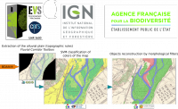
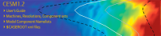
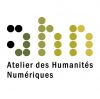
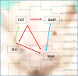

Projets¶
Table des matières
- Academics
- Approche computationnelle du changement linguistique sur Twitter
- Approche des Données par Annotations (Lyon)
- Activation electrocatalytique du CO2
- Atelier des Humanités Numériques
- Ab initio molecular dynamics and metadynamics simulations
- CADENCED
- ANR ChimigraphN
- ANR DYQUMA
- ANR FSCF
- ANR FSCF
- ANR GALAC
- ANR GALAC
- ANR LORIS
- ANR Muse
- ANR Rideporph
- ANR STATOCEAN
- Aide au diagnostic pulmonaire chez le carnivore domestique
- Apprentissage statistique profond (deep learning) pour l’analyse de processus multifractales
- CARPACCIO
- Chaire d’excellence ANR
- Circumstellar environments reconstruction with deep learning
- Calcul de l’évolution spectrale d’une supernova 1A à double détonation avant son pic de luminosité à l’aide du code de transfert radiatif 1D CMFGEN
- Caractérisation par LIDAR de la végétation de la rivière Drôme
- Conception de molécules électro-chromiques pour des encres électroniques en couleur : une approche computationnelle
- Convection dans le manteau et océans de magma
- Computational Physics of Soft and Biological Matter
- Dissipation des courants océaniques par radiation d’ondes internes
- Deciphering the developmental modules using closely related non model species
- Dynamique de fluides dans des environnements désordonnés
- Descriptive and predictive cell-based models for the emergence of shape in plants
- DYN4DRUGS
- Etude comparative de GPU pour l’analyse par réseaux de neurones d’images biomédicales
- Etude numérique de l’influence des particules puits sur la formation des disques protostellaires
- Epifly : Base de données et interfaçage pour le traitement, la visualisation et la modélisation de l’épigénome de la mouche D. melanogaster
- Etude des phénomènes de vaporisation de mélange d’oxydes
- Ecoulements turbulents bidimensionnels et géophysiques
- EuroSim
- Flexible Approximate MUlti-layer Sparse Transforms (FAµST)
- FSL4GE
- Hydrologic signals of floating wood in rivers. Case study: Monitoring floating large woods in the Ain River, France
- IMPACT : L’impact géant et la formation de la Terre et de la Lune
- Image processing : Anisotropic Blur
- LaBS
- Image segmentation: Optimization of Level Set Methods for biological image segmentation (LSM)
- A landscape of transposable elements in fish
- Modélisation de l’atmosphère des étoiles et des planètes
- Modélisation de l’organisation des chromosomes lors de la spermatogénèse du grillon
- Moteur de Recherche en Langue des Signes par Sentence Embeddings
- Nouveaux procédés d’amination sélective pour la synthèse de monomères biosourcés
- Optimisation non lisse des matrices de transfert pour la géographie électorale
- Portage du code CESM sur le calculateur du CINES (OCCIGEN)
- Projet LIAISON: Deep Learning for Linguistic & Social Network
- PUMA MIND
- PUMA MIND
- Projet Vectorisation automatique de corridors fluviaux sur des cartes anciennes
- Resolving Morbilliviruses Phylogeny
- Réseaux neuronaux convolutifs pour la segmentation de texture
- Structure et Dynamique de membranes lipidiques à l’échelle moléculaire
- Simulation de l’émission par fluorescence au sein de cristaux photoniques tridimensionnels : cas des structures naturelles des charançons
- Développement d’une bibliothèque parallèle dans le domaine de la biologie cellulaire et du traitement d’images
- Développement d’une bibliothèque parallèle dans le domaine de la biologie cellulaire et du traitement d’images
- Structure and interactions of molecules with biological activity
- Simulations hautes performances des écoulements océaniques et des interactions eau-glace sur Terre ainsi qu’au sein des lunes de glace
- SMOLU ou la coagulation de petits solides en agrégats
- Collaboration ENS - Solvay
- To be a planet, or not to be, that is the question
- Wave Resonance and Multistability in Atmospheric Jet Dynamics
- Waves in the radiative zones of rotating magnetized stars
- Wave Topology in Fluids - projet ANR
- WURM project
- WURM project
- Analyse du comportement numérique et informatique du code AquaSol
- Implémentation de nouvelles fonctionnalites dans le code AquaSol
- Optimisation des méthodes d’approximation numérique déjà implémentées. Mise en œuvre d’autres méthodes et de nouveaux algorithmes de discrétisation
- Forge du Centre Blaise Pascal
PSMN
Projets ERC¶
ERC CRUSLID Formation, magmatic evolution and present-day structure of the CRUsts of Stagnant-LID planets (2021-2026)
Élucider les secrets de la formation de la croûte des planètes. La faible densité de la croûte continentale de la planète pourrait avoir donné naissance à la tectonique des plaques, à savoir les mouvements de la lithosphère de la Terre. Des études ont révélé que cette faible densité trouve son origine dans des processus qui ont affecté la répartition des matériaux à travers les continents. Cependant, il existe encore des lacunes dans nos connaissances concernant les caractéristiques de la croûte sur d’autres planètes telluriques et la manière dont elle s’est formée. Plus particulièrement, des processus physiques analogues pourraient-ils se produire sur d’autres planètes dépourvues de tectonique des plaques? Le projet CRUSLID, financé par l’UE, cherche à combler ces lacunes en développant un modèle révolutionnaire qui permettra de déterminer les caractéristiques de la croûte d’autres planètes. Pour ce faire, il tirera parti de recherches multidisciplinaires et de nouvelles observations planétaires susceptibles de fournir de précieuses informations sur la formation de la croûte des corps telluriques primitifs.
ERC-COG - Consolidator Grant
Coordination : (Lauréate) Chloé MICHAUT (LGL-TPE)
ERC PODCAST - Predictions and Observations for Discs: Planetary Cores and dust Aggregates from non-ideal MHD Simulations with radiative Transfer (2020-2025)
One of the most fascinating and challenging question of Modern Astrophysics is: How do planets form? Indeed, micronic dust grains must grow over 30 orders of magnitude in mass to build planet cores. Global numerical simulations of dust grains that couple the dynamics of the particles to their growth/fragmentation and the radiation in the disc are compulsory to understand this process. Yet, this coupling has never been realised, given tremendous difficulties that originate from fundamental physical properties of dusty flows. The evolution of the dust distribution in protoplanetary discs remains therefore very poorly understood. Our novel groundbreaking code is the first to handle non-ideal MHD, radiation and dust with dynamical growth and fragmentation. We can therefore overcome all past difficulties to model gasgrains mixtures in discs consistently. PODCAST is designed to study the different stages of gas and dust evolution in the various regions of the disc, with the main objective of combining these steps in a holistic model for planet formation. We will confront the results directly with observations, unleashing the full potential of the grand instruments ALMA, SPHERE, JWST and SKA.
ERC Consolidator Grant
Coordination : (Lauréat) Guillaume LAIBE (CRAL)
ERC SENECA - Shape-Shifting Ultrathin 2D Colloidal NanoPlatelets (2020-2025)
Mechanical instabilities of thin sheets has long been exploited in Nature to create patterns and ensure vital functions such as stimuli responsiveness. By applying forces at the surface of thin objects, it is possible to create a wide variety of chiral 3D shapes such as helices, twists and rolls. Moreover, minute changes on these forces can induce dramatic shape-shifting between different geometries. Our goal is to use this general principle to establish a new class of chiral and addressable nanostructures that current synthetic strategies can not afford. Building on our pioneering results, i will use organic ligands at the surface of two dimensional colloidal nanoplatelets to bend and twist ultrathin nanosheets into complex shapes. We first aim at establishing generic synthetic principles for colloidal 2D materials. To do so, we will develop in situ scattering methods to get atomistic insight on their formation mechanism. We will then determine the link between surface chemistry, interfacial stress and conformation in a set of model systems. Based on these insights, we will design stimuli responsive surface ligands whose conformational change upon excitation by an external stimuli will impact the nanoparticle shape. Finally, understanding the nanoscale colloidal forces and geometric frustration between these new building blocks will enable the design of nanostructured solids made by out-of-equilibrium assembly. This research program will advance our fundamental knowledge on mechanics at the nanoscale and provide a mechanistic framework for synthetic chemistry of 2D materials. The nanoparticles that we will synthesize are expected to have broad applications due to their chiroptical properties and their stimuli responsive character in fields as diverse as nano-swimmers, detection of chiral bio-coumpounds, photo-catalysis, soft-robotic or sensors/actuators..
ERC Consolidator Grant
Coordination : (Lauréat) Benjamin Abécassis (LCH)
ERC IMPACT The Giant Impact and the Earth and Moon Formation Consolidator Grant (2016-2021)
Very little is understood of the physics governing the Giant Impact and the subsequent formation of the Moon. […] We employ a multiscale approach to bridge the gap between atomic, geological sample, and planetary scales via thermodynamics […]. Plausible impact scenarios, features of the impactor and of the proto-Earth will be constrained with a feedback loop, until convergence between predictions of final Earth-Moon compositions and observations is reached.
Coordination : (Lauréat) Razvan Caracas
ERC MESOPROBIO (2015-2020)
Mesoscopic models for propagation in biology, représente non seulement un défi mathématique, c’est aussi un réel apport pour mieux appréhender les mouvements collectifs. Des bactéries aux espaces invasives, il s’agit de décrire le vivant par des équations.
Coordination : (Lauréat) Vincent Calvez
ERC TRANSITION (2013-2018)
« Large Deviations and Non Equilibrium Phase Transitions for Turbulent Flows, Climate and the Solar System », en français « Théorie des grandes déviations et prédiction d’événements rares et leur application à des écoulements turbulents, des changements abrupts de climat, et la dynamique du système solaire »
Coordination ENS de Lyon : (Lauréat) Freddy Bouchet
ERC TOFU (2012-2018)
« Toward a new generation of multi-dimensional stellar evolution models : the TOol of the FUture », en français « Vers une nouvelle génération de modèles multi-dimensionnels d’évolution stellaire: l’outil d’avenir »
Coordination ENS de Lyon : Rolf Walder (Lauréate : Isabelle Baraffe)
Multidisciplinary ERC (2012-2016)
« Structure and dynamics of biomolecules by two-dimensional ultraviolet spectroscopy ». Multidisciplinary.
Co-Investigator Marco Garavelli
IUF¶
IUF Elise Dumont (2019-2024)¶
Chaire industrielle IDEXLYON ENSL IFPEN¶
Chaire industrielle Road4cat (2018-2022)
Laureat Pascal Raybaud:
IDEX Lyon FELLOWSHIPS¶
Molecular Thermodynamics of Ionic Liquids (2018-2021)
Lauréate ENS de Lyon Margarida Costa Gomes: (description)
IDEX Lyon ELAN ERC¶
(2018-2020)
Lauréate ENS de Lyon Elise Dumont: description
Contrats Européens¶
Puma Mind (2012-2015)

International R&D project that aims to advance the state of knowledge in designing new tools for Proton Exchange Membrane Fuel Cells (PEMFCs)
Coordination ENS de Lyon : (Lauréat David Loffreda)
Collaborations Industrielles¶
Collaboration ENS-IFP EN (2021-2025)
Coordination ENS de Lyon : Stephan Steimann
Collaboration ENS-IFP EN (2019-2023)
Coordination ENS de Lyon : Carine Michel
Collaboration ENS-Solvay-Rhodia (2018-2022)
Coordination ENS de Lyon : Carine Michel
Collaboration ENS-Total

Développement d’un outil d’évaluation des paramètres du procédé mis en oeuvre par Hutchinson dans le cas des mélanges PP-EPDM
Développement d’un modèle mésoscale des phénomènes d’adhésion à l’interface des systèmes Silicone-Silane-Métal
Coordination ENS de Lyon : Philippe Sautet & Carine Michel
Collaboration ENS-Solvay

Coordination ENS de Lyon : Philippe Sautet & Carine Michel
FUI LaBS (2009-2013)
Coordination ENS de Lyon : Emmanuel Lévêque
Projets ANR¶
ANR VPflows (2021-2024)
Partenaire ENS de Lyon Laboratoire de Mathématiques (UMPA): description
ANR FRAMA (2021-2024)
Partenaire ENS de Lyon Laboratoire de Physique (PHYS): description
ANR INGENCAT (2021-2024)
Partenaire ENS de Lyon Laboratoire de Chimie (LCH): description
ANR NucleoMAP (2020-2025)
Partenaire ENS de Lyon Laboratoire de Chimie (LCH): description
ANR DYCAT (2019-2023)
Partenaire ENS de Lyon Laboratoire de Chimie (LCH): description
ANR CryoGrad (2018-2022)
Partenaire ENS de Lyon Julien Salort: description
ANR LIQUID2 (2018-2023)
Partenaire ENS de Lyon Agilio Padua: description
ANR Photochromics (2018-2023)
Partenaire ENS de Lyon Carine Michel: description
ANR TeneMod (2017-2022)
Partenaire ENS de Lyon Tangui Le Bahers: description
ANR TANOPOL (2015-2019)
Partenaire ENS de Lyon Carine Michel: description
ANR AZAP (2014-2019)
Partenaire ENS de Lyon Paul Fleurat-Lessard: description
ANR MASCAT (2014-2018)
Coordination ENS de Lyon : Carine Michel
ANR MuSiC (2014-2018)
Coordination ENS de Lyon : Philippe Sautet: description
ANR SHAPes (2013-2017)
Coordination ENS de Lyon : Philippe Sautet, Carine Michel, Paul Fleurat-Lessard description
ANR Ln23 (2014-2017)
Partenaire ENS de Lyon Elise Dumont: description
ANR FSCF (2012-2015)

Fluctuations in Structured Coulomb Fluids
Coordination ENS de Lyon : Ralf Everaers
ANR RIDEPORPH (2012-2015)
Coordination : Marie-Laure Bocquet
ANR Galac (2011-2015)

Synthèse d’acide acrylique à partir du glycérol via l’acide lactique
Coordination ENS de Lyon : Philippe Sautet & Carine Michel
ANR CADENCED (2009-2014)
{kind=link}
Computer Assisted Discovery and Elucidation of Novel Catalysts for Economic Development of Saudi Arabia
Coordination ENS de Lyon : Philippe Sautet
ANR LORIS (2010-2013)

Numerical Computation of Large Deviations and out-of-equilibrium Statistical Mechanics of Turbulent Flows
Coordination ENS de Lyon : Stefano Ruffo
ANR ChimiGraphN (2010-2013)
Chemisorption, reactivity and defects on graphene
Coordination ENS de Lyon : Marie-Laure Bocquet
ANR Dyquma (2010-2013)

Études théoriques de la dynamique quantique de molécules absorbées
Coordination ENS de Lyon : Philippe Sautet, Wei Dong & David Loffreda
ANR STATOCEAN (2009-2012)

ANR Muse (2008-2012)

Couplage Ugi-Smiles : de l’accès éco-compatible à des produits pharmaceutiques à la synthèse de nouveaux ligands pour les métaux lourds
Coordination ENS de Lyon : Paul Fleurat-Lessard
Labex¶
Labex Z-project iMust (2022-2023)
Scientific coordination : S. Steimann :
Labex iMust (2021-2022)
Scientific coordination : S. Steimann :
Labex LIO (2020-2021)
Upgrade of the Common Computing Facility (CCF) Cluster, phase 2 (Q1 2021) Scientific coordination : J. Blaizot & E. Debayle : \ Technical coordination : F. Dubuffet & L. Michel-Dansac
Upgrade of the Common Computing Facility (CCF) Cluster, phase 1 (Q1 2020) Scientific coordination : J. Blaizot & E. Debayle : \ Technical coordination : F. Dubuffet & L. Michel-Dansac
Autres projets¶
Dissipation des courants océaniques par radiation d’ondes internes (2016-2018)

Dissipation des courants océaniques par radiation d’ondes internes
Coordination : Antoine Venaille
Convection dans le manteau et océans de magma (2015-2018)

Convection dans le manteau et océans de magma
Coordination ENS de Lyon: Stephane Labrosse
Ecoulements turbulents bidimensionnels et géophysiques (2014-2016)
{kind=link}
Equation barotrope stochastique 2D
Coordination ENS de Lyon : Freddy Bouchet
SIB_CP (2013-2016)
Développement d’une bibliothèque parallèle dans le domaine de la biologie cellulaire et du traitement d’images
Coordination ENS de Lyon : Cerasela Calugaru et Annamaria Kiss
SIMBIO (2013-2018)

Structure and interactions of molecules with biological activity
Coordination ENS de Lyon : Martin Spichty
WURM
A database of computed physical properties of minerals
Coordination ENS de Lyon : Razvan Caracas
PHOENIX Simulator
Star, Brown Dwarf and Planet Simulator
Coordination ENS de Lyon : France Allard
Projets Master¶
Master BioSciences ENS de Lyon (2014-2015)
Image processing : Anisotropic lter & Level-Set Method for segmentation on 3D biological images (Level Set Method & Anisotropic Blur) Coordination ENS de Lyon : Annamaria Kiss et Cerasela Calugaru
Collaborations Start-Up¶
CARPACCIO (2012-2015)

Program for muscle analysis enabling global, unbiased and multi-parametric characterization of fiber populations in muscle cross-sections
Coordination ENS de Lyon : Brian B. Rudkin
Collaborations Fournisseurs¶
Société Dell Technologies
Société HPE
Société Serviware
Société TotaLinuX
Le CBP soutient ou a soutenu les projets scientifiques suivants :
2021¶
Simulations hautes performances des écoulements océaniques et des interactions eau-glace sur Terre ainsi qu’au sein des lunes de glace

Simulations hautes performances des écoulements océaniques et des interactions eau-glace sur Terre ainsi qu’au sein des lunes de glace
Chercheurs : Louis-Alexandre Couston, Clément de la Salle (ENS de Lyon)
Expert analyse numérique et calcul scientifique : Cerasela Calugaru (représentant CBP/PSMN)
Hydrologic signals of floating wood in rivers. Case study: Monitoring floating large woods in the Ain River, France

Hydrologic signals of floating wood in rivers. Case study:Monitoring floating large woods in the Ain River, France
Chercheurs : Hossein Ghaffarian (Post-doc, EVS), Samuel Dunesme (PhD, EVS), Herve Piégay (DR, EVS)
Expertise IT : Emmanuel Quemener (CBP)
Circumstellar environments reconstruction with deep learning

Circumstellar environments reconstruction with deep learning
Chercheuses : Assia Chahid (stagiaire, LabPhys, ENS-Lyon), Nelly Pustelnik (DR, LabPhys, ENS-Lyon)
Expertise IT : Emmanuel Quemener (CBP)
Resolving Morbilliviruses phylogeny
{kind=link}
Resolving Morbilliviruses Phylogeny
Chercheurs : Augustin Clessin (M1, ENS-Lyon), François Roudier (ENS-Lyon), ? (Université de Copenhague)
Expertise IT : Emmanuel Quemener (CBP)
Ab initio molecular dynamics and metadynamics simulations
Ab initio molecular dynamics and metadynamics simulations
Chercheurs : Pierre-Adrien Payard, Lionel Perrin, Ludmilla Verrieux, Jordan Rio (ICBMS)
Expert analyse numérique et calcul scientifique : Cerasela Calugaru (représentant CBP/PSMN)
Etude des phénomènes de vaporisation de mélange d’oxydes

Etude des phénomènes de vaporisation de mélange d’oxydes
Chercheurs : Marwane Mokhtari (M2 au LGL, ENS-Lyon), Bernard Bourdon (LGL, ENS-Lyon)
Expertise IT : Emmanuel Quemener (CBP)
Moteur de Recherche en Langue des Signes par Sentence Embeddings

Moteur de Recherche en Langue des Signes par Sentence Embeddings
Chercheuses : Coline Petit-Jean, Michèle Gouiffès (LISN, Université Paris-Saclay) et Hannah Bull (LISN, Université Paris-Saclay),
Expertise IT : Emmanuel Quemener (CBP)
SMOLU ou la coagulation de petits solides en agrégats

SMOLU ou la coagulation de petits solides en agrégats
Chercheurs : Guillaume Laibe (CRAL, ENS-Lyon), Maxime Lombart (CRAL, ENS-Lyon), Benoit Commerçon (CRAL, ENS-Lyon), Timothee Davis-Clery (CRAL- ENS-Lyon)
Expertise IT, portage GPU : Emmanuel Quemener (CBP)
Approche computationnelle du changement linguistique sur Twitter

Approche computationnelle du changement linguistique sur Twitter
Chercheurs : Jean-Philippe Magué (ICAR, ENS-Lyon), Louise Tarrade (ICAR, ENS-Lyon), Mélanie Veloso (ICAR, ENS-Lyon)
Expertise IT : Emmanuel Quemener (CBP)
2020¶
Approche des Données par Annotations (Lyon)

Adal
Chercheurs : Bruno Morandière (IAO, ENS-Lyon), Peter Cornwell (Data-Futures)
Expertise IT : Emmanuel Quemener (CBP)
Wave Resonance and Multistability in Atmospheric Jet Dynamics (2019-2022)
Projet Wave Resonance and Multistability in Atmospheric Jet Dynamics
Coordination : Corentin Herbert (ENS-Lyon, Laboratoire de Physique)
Partners : un doctorant et plusieurs étudiants en master au Laboratoire de Physique (à recruter)
Expert analyse numérique et calcul scientifique : Cerasela Calugaru (représentant CBP/PSMN)
Aide au diagnostic pulmonaire chez le carnivore domestique

Aide au diagnostic pulmonaire chez le carnivore domestique
Chercheurs : Thomas Grenier (INSA-Lyon), Carolie Boulocher (VetagroSup), Léo Dumortier (VetagroSup)
Expertise IT : Emmanuel Quemener (CBP)
To be a planet, or not to be, that is the question
Phantom/MCFort
Chercheurs : Guillaume Laibe (CRAL, ENS-Lyon), Guillaume Brochier (CRAL)
Expertise IT : Emmanuel Quemener (CBP)
SimEmiFlu3D
SimEmiFlu3D
Chercheurs : Eric Freyssingeas (Laboratoire de physique, ENS-Lyon), Etienne Pinard (M1)
Expertise IT : Emmanuel Quemener (CBP)
FSL4GE
FLS4GE
Chercheurs : Thomas GRENIER (INSA Lyon), Soufian Targaoui, Yacine Youcef
Expertise IT : Emmanuel Quemener (CBP)
DYN4DRUGS

Dyn4Drugs
Chercheurs : Elisa Rioual (M2 Student), Claire Loison (ILM UMR5306/UCBL), Jérôme Boisbouvier (IBS UMR5075/CEA/UJF)
Expertise IT : Emmanuel Quemener (CBP)
FAuST

Chercheurs : Hakim Hadj-Djilani (IXXI)
Expertise IT : Emmanuel Quemener (CBP)
Academics
Academics
Chercheurs : Patrice Abry, Pienne Borgnat, Freddy Bouchet (Laboratoire de Physique, ENS-Lyon)
Expertise IT : Emmanuel Quemener (CBP)
2019¶
Réseaux neuronaux convolutifs pour la segmentation de texture.

Réseaux neuronaux convolutifs pour la segmentation de texture
Chercheurs : Barbara Pascal, Nelly Pustelnik, Patrice Abry (Laboratoire de Physique, ENS-Lyon)
Expertise IT : Emmanuel Quemener (CBP)
Etude numérique de l’influence des particules puits sur la formation des disques protostellaires.

Etude numérique de l’influence des particules puits sur la formation des disques protostellaires.
Chercheurs : Benoit Gay (CRAL, ENS-Lyon), Benoit Commerçon (CRAL, ENS-Lyon)
Expertise IT : Emmanuel Quemener (CBP)
Modélisation de l’organisation des chromosomes lors de la spermatogénèse du grillon
Modélisation de l’organisation des chromosomes lors de la spermatogénèse du grillon
Chercheurs : Daniel Jost (LBMC, ENS-Lyon), Maxime Tortora (LBMC, ENS-Lyon)
Expertise IT : Emmanuel Quemener (CBP)
Evolution spectrale d’une supernova 1A à double détonation

Calcul de l’évolution spectrale d’une supernova 1A à double détonation avant son pic de luminosité à l’aide du code de transfert radiatif 1D CMFGEN
Chercheurs : Stéphane Blondin (LAM), Jules Allègre (ENS-Lyon, stagiaire)
Expertise IT : Emmanuel Quemener (CBP)
Apprentissage statistique profond (deep learning) pour l’analyse de processus multifractales
Apprentissage statistique profond (deep learning) pour l’analyse de processus multifractales.
Chercheurs : Stéphane Gaëtan Roux (ENS-Lyon, Physique)
Expertise GPU & IT : Emmanuel Quemener (CBP)
Modélisation de l’atmosphère des étoiles et des planètes (2019-2022)
Projet Modélisation de l’atmosphère des étoiles et des planètes
Coordination : France Allard (ENS-Lyon, CRAL)
Expert analyse numérique et calcul scientifique : Cerasela Calugaru (représentant CBP/PSMN)
Projet Vectorisation automatique de corridors fluviaux sur des cartes anciennes
Projet Vectorisation automatique de corridors fluviaux sur des cartes anciennes
Direction : Hervé Piegay (ENS-Lyon, UdL), Sébastien Mustière (IGN, ENSG)
Partners : Samuel Dumesne (ENS-Lyon)
Expertise GPU & IT : Emmanuel Quemener (CBP)
Portage du code CESM sur le calculateur du CINES (OCCIGEN) (2019)
Projet Portage du code CESM sur le calculateur du CINES (OCCIGEN)
Coordination : Freddy Bouchet (ENS-Lyon, Laboratoire de Physique)
Partners : Francesco Ragone (ENS-Lyon, Laboratoire de Physique)
Expert analyse numérique et calcul scientifique : Cerasela Calugaru (représentant CBP/PSMN)
2018¶
Projet Wave Topology in Fluids - ANR 2018-2021

Projet WTF (Wave Topology in Fluids)
Coordination : Antoine Venaille
Partenaires ENS de Lyon : Denis Bartolo, Pierre Delplace, David Carpentier (Laboratoire de Physique)
Expert analyse numérique et calcul scientifique : Cerasela Calugaru (représentant CBP/PSMN)
Projet LIAISON
Projet LIAISON (Deep Learning for Linguistic & Social Network)
Coordination : Márton Karsai (IXXI, LIP, ENSL)
Partners : Sébastien Lerique, Jacobo Levy-Abitbol
Expertise GPU & IT : Emmanuel Quemener (CBP)
Projet IMPACT (L’impact géant et la formation de la Terre et de la Lune) -ERC 2016-2021

Projet IMPACT (L’impact géant et la formation de la Terre et de la Lune)
Coordination : Razvan Caracas (Laboratoire de Géologie, ENSL)
Parteners : Natalia Solomatova, Ema Bobocioiu, Anais Kobsch, Zhi Li, Helene Plihon, Sarah H. Stewart, Francois Soubiran
Expert analyse numérique et calcul scientifique : Cerasela Calugaru
Simulation numérique des ondes topologiques dans les eaux peu profondes
Simulation numérique des ondes topologiques dans les eaux peu profondes (2018-2020)
Coordination : Antoine Venaille (Laboratoire de Physique, ENSL)
Parteners : Denis Bartolo, Pierre Delplace, David Carpentier, Antoine Renaud (Laboratoire de Physique, ENSL)
Expert analyse numérique et calcul scientifique : Cerasela Calugaru (CBP)
Optimisation non lisse des matrices de transfert pour la géographie électorale

Optimisation non lisse des matrices de transfert pour la géographie électorale
Auteurs : Pablo Jensen, Nelly Pustelnik, Marion Foare, Yacouba Kalouga (équipe Sysiphe, Laboratoire de Physique, ENSL)
Expertise GPU & IT : Emmanuel Quemener (CBP)
Waves in the radiative zones of rotating magnetized stars
Waves in the radiative zones of rotating magnetized stars
Auteurs : A.Valade, V.Prat, S.Mathis, K.Augustson (ENS de Lyon et Master AMS UPSaclay,Service AstroPhysique (Sap), IRFU, CEA Saclay)
Expertise GPU & IT : Emmanuel Quemener (CBP)
Analyse de données biomédicales par réseaux de neurones sur GPU
Etude des infrastructures de calculs GPU haute performances pour l’analyse de données médicales par réseaux de neurones
Coordination : Thomas Grenier (CREATIS, INSA de Lyon)
Expertise GPU & IT : Emmanuel Quemener (CBP)
2016¶
AHN : Atelier des Humanités Numériques
Coordination : Nathalie Arlin
Responsable : Pierre-Yves Jallud
Deciphering the developmental modules using closely related non model species
Deciphering the developmental modules using closely related non model species
Functional Manager: Alexa Sadier
IT Manager : Emmanuel Quemener
Dissipation des courants océaniques par radiation d’ondes internes (2016-2018)
Dissipation des courants océaniques par radiation d’ondes internes (2016-2018)
Coordination : Antoine Venaille
Expert analyse numérique et calcul scientifique : Cerasela Calugaru
2015¶
Caractérisation par LIDAR de la végétation des rives de la Drome (2015-2018)

Pioneer riparian vegetation characterization on the Drome River
Responsables fonctionnels : Hervé Piégay, Kristell Michel (EVS, UMR 5600)
Expert infrastructure informatique scientifique : Emmanuel Quemener
Convection dans le manteau et océans de magma (2015-2018/ 2020-2021)
Convection dans le manteau et océans de magma
Coordination : Stephane Labrosse
Expert analyse numérique et calcul scientifique : Cerasela Calugaru
2014¶
Thèse École doctorale de Chimie (2014-2017)

Coordination : Marco Garavelli
Thésard : Baptiste Demoulin
Thèse École doctorale de Chimie (2014-2017)

Dynamique de fluides dans des environnements désordonnés
Coordination : Wei Dong, Vincent Krakoviack
Thésard : Thomas Konincks
Post-doc Solvay (2013-2015)
Activation electrocatalytique du CO2
Coordination : Carine Michel
Post-doc : Stephan Steinmann
Thèse CNRS-Solvay (2013-2016)
Nouveaux procédés d’amination sélective pour la synthèse de monomères biosourcés
Coordination : Carine Michel
Thésard : Alexandre Dumon
Master (2014/2016)
Image processing : Anisotropic lter & Level-Set Method for segmentation on 3D biological images (Level Set Method & Anisotropic Blur)
Coordination : Annamaria Kiss et Cerasela Calugaru
Etudiant : Typhaine Moreau
Ecoulements turbulents bidimensionnels et géophysiques (2014-2016)
Equation barotrope stochastique 2D
Coordination : Freddy Bouchet
Expert analyse numérique et calcul scientifique : Cerasela Calugaru
Epifly (2014-2015)

Coordination : Cédric Vaillant, Emmanuel Quemener
Structure et Dynamique de membranes lipidiques à l’échelle moléculaire (2014)
Structure et Dynamique de membranes lipidiques à l’échelle moléculaire
Coordination : Claire Loison, Emmanuel Quemener
2013¶
SIB_CP (2013-2016)

Développement d’une bibliothèque parallèle dans le domaine de la biologie cellulaire et du traitement d’images
Coordination : Cerasela Calugaru et Annamaria Kiss
Fishin’TE (2013-2014)

A landscape of transposable elements in fish
Coordination : Domitile Chalopin, Magali Naville, Emmanuel Quemener
SIMBIO (2013-2018)
Structure and interactions of molecules with biological activity
Coordination : Martin Spichty
2012¶
Humanités numériques (2012-20xx)
Atelier des Humanités numériques de l’ENS de Lyon
Coordination : Jean-Philippe Magué
ANR FSCF (2012-2015)
Fluctuations in Structured Coulomb Fluids
Coordination : Ralf Everaers
Post-doc : Sam Meyer
Expert analyse numérique et calcul scientifique : Cerasela Calugaru
CARPACCIO (2012-20xx)
Coordination : Brian B. Rudkin
WURM project (2012-20xx)
A database of computed physical properties of minerals
Coordination : Razvan Caracas
Expert analyse numérique et calcul scientifique : Cerasela Calugaru
ANR Rideporph (2012-2015)
Coordination : Marie-Laure Bocquet
Post-doc : Marie Lattelais
Puma Mind (2012-2015)
International R&D project that aims to advance the state of knowledge in designing new tools for Proton Exchange Membrane Fuel Cells (PEMFCs)
Coordination ENS : David Loffreda
Bourse Eiffel (2012-2015)

Ce programme de prestige récompense les étudiants étrangers présentés par l’établissement français dans lequel ils poursuivront leurs études, et retenus par un jury d’évaluateurs.
Étude de fluides complexes d’intérêt biologique et de fluides confinés dans des matériaux nano-poreux
Lauréat : Falin Tian
Directeur de Thèse : Wei Dong
2011¶
ANR Galac (2011-2015)
Synthèse d’acide acrylique à partir du glycérol via l’acide lactique
Coordination ENS : Philippe Sautet & Carine Michel
Doctorant : Jérémie Zaffran
Collaboration ENS - Total
Développement d’un outil d’évaluation des paramètres du procédé mis en oeuvre par Hutchinson dans le cas des mélanges PP-EPDM
Développement d’un modèle mésoscale des phénomènes d’adhésion à l’interface des systèmes Silicone-Silane-Métal
Coordination ENS : Philippe Sautet
Collaboration ENS - Solvay
Coordination ENS : Philippe Sautet & Carine Michel
Post-doc : Prokopis Andrikopoulos
2010¶
ANR Dyquma (2010-2013)
Études théoriques de la dynamique quantique de molécules absorbées
Coordination ENS : Philippe Sautet, Wei Dong & David Loffreda
ANR ChimigraphN (2010-2013)
{kind=link}
Chemisorption, reactivity and defects on graphene
Coordination ENS : Marie-Laure Bocquet
ANR LORIS (2010-2013)
Numerical Computation of Large Deviations and out-of-equilibrium Statistical Mechanics of Turbulent Flows
Coordination : Stefano Ruffo
2009¶
Biophysique et développement (2009-2017)
Descriptive and predictive cell-based models for the emergence of shape in plants
Coordination : Arezki Boudaoud
CADENCED (2009-2014)
Computer Assisted Discovery and Elucidation of Novel Catalysts for Economic Development of Saudi Arabia
Coordination ENS : Philippe Sautet
LaBS (2009-2013)
Lattice Boltzmann solver
Coordination : Emmanuel Lévêque
Post-doc : Hatem Touil
ANR STATOCEAN (2009-2012)
Coordination : Freddy Bouchet
2008¶
ANR Muse (2008-2012)
Coordination ENS : Paul Fleurat-Lessard
2007¶
Marie Curie Early Stage Training (EST) EuroSim (2006-2010)
European Molecular Simulations Training Program
Coordination : Ralf Everaers
CompPhysSoftBioMat (2005-20xx)
Computational Physics of Soft and Biological Matter
Coordination : Ralf Everaers
Chaire d’excellence ANR
Ralf Everaers